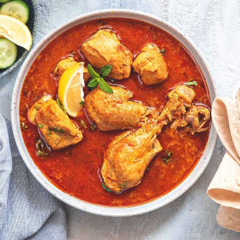

Indian Chicken Curry (Murgh Kari)

Description
Indian chicken curry is a typical spicy Indian dish. It is very tasty but
it might be a bit too spicy for people who are not accustomed to hot dishes.
Specially if you are not habituated in eating spicy food, then you should
be a bit cautious about the quantity of this dish you consume as it might
upset your stomach.
Ingredients:
- 2 pounds skinless, boneless chicken breast halves
- ½ teaspoons salt
- ½ cup cooking oil
- 1 ½ cups chopped onion
- 1 tablespoon minced garlic
- 1 ½ teaspoons minced fresh ginger root
- 1 tablespoon curry powder
- 1 teaspoon ground cumin
- 1 teaspoon ground turmeric
- 1 teaspoon ground coriander
- 1 teaspoon cayenne pepper
- 1 tablespoon water
- 1 (15 ounce) can crushed tomatoes
- 1 cup plain yogurt
- 1 tablespoon chopped fresh cilantro
- 1 teaspoon salt
- ½ cup water
- 1 teaspoon garam masala
- 1 tablespoon chopped fresh cilantro
- 1 tablespoon fresh lemon juice
Procedure
- Sprinkle the chicken breasts with 2 teaspoons salt.
- Heat the oil in a large skillet over high heat; partially cook the chicken in
the hot oil in batches until completely browned. Transfer the browned chicken
breasts to a plate and set aside.
- Reduce the heat under the skillet to medium-high; add the onion,
garlic, and ginger to the oil remaining in the skillet and cook and stir
until the onion turns translucent, about 8 minutes. Stir the curry powder,
cumin, turmeric, coriander, cayenne, and 1 tablespoon of water into the
onion mixture; allow to heat together for about 1 minute while stirring.
Mix the tomatoes, yogurt, 1 tablespoon chopped cilantro, and 1 teaspoon
salt into the mixture. Return the chicken breast to the skillet along
with any juices on the plate. Pour 1/2 cup water into the mixture;
bring to a boil, turning the chicken to coat with the sauce. Sprinkle
the garam masala and 1 tablespoon cilantro over the chicken.
- Cover the skillet and simmer until the chicken breasts are no longer
pink in the center and the juices run clear, about 20 minutes. An
instant-read thermometer inserted into the center should read at least
165 degrees F (74 degrees C). Sprinkle with lemon juice to serve.
Back to list of recipes